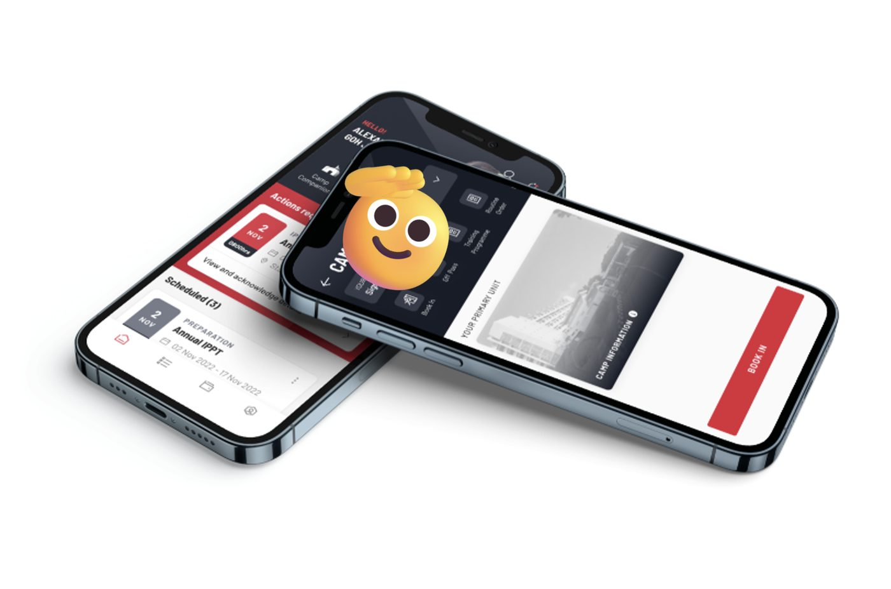
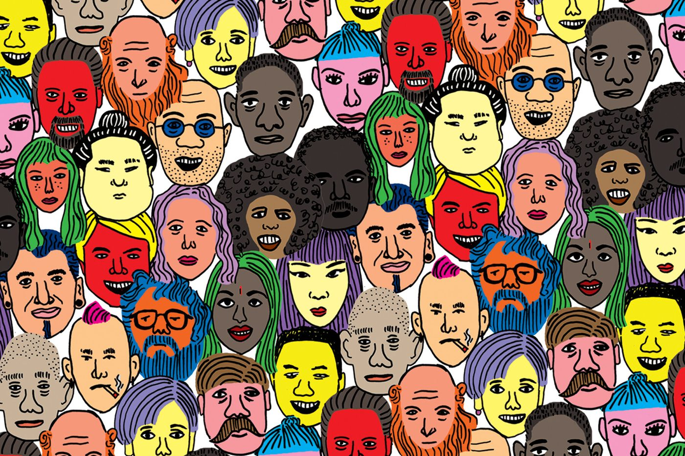
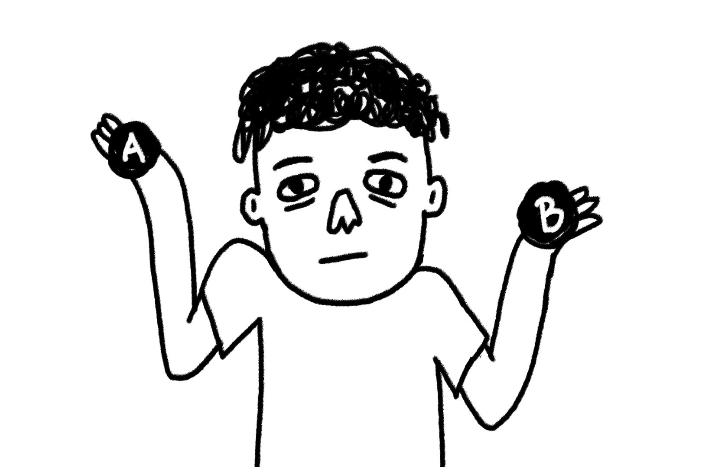
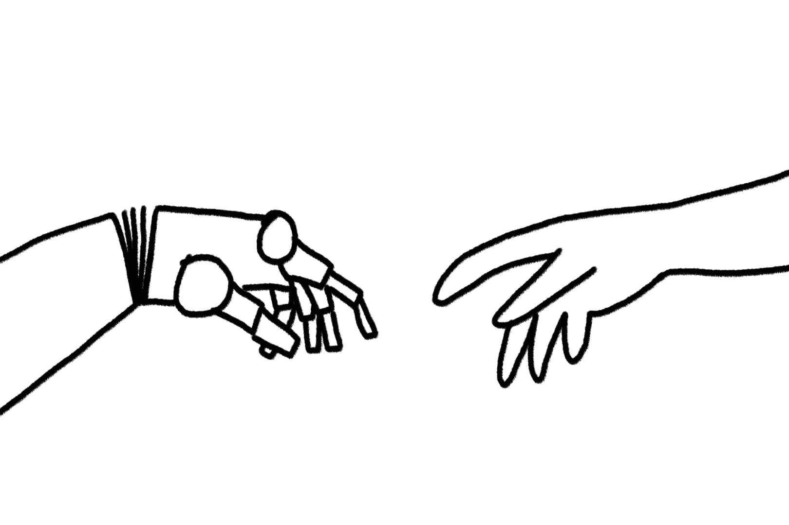

Giving commanders the intel they need to lead better.
Working closely with engineering and multiple agencies to build a productivity platform for defence operations. 10,000 users in 3 months, 4.3/5 stars.

Digital transformation
Cutting platform onboarding from 2 months to 2 minutes.
Finding authentication opportunities through user testing. Modernising legacy workflows as part of digital transformation. A 6-month pilot becomes a 2-year engagement.

Global network
Building an AI insights engine for a global network that keeps growing.
Leading prototyping and supporting research to build an insights engine for a global network. Rapid experimentation helps us learn what members need, so we can serve them better.
About
I'm a systems designer helping organisations get technology working inside and out.
I find where value gets stuck between people, process and technology, then design the system that frees it up. The tool changes, whether it's a programme, a prototype, a workflow or an AI agent, but the job doesn't: get the right people connected and working better. Technology is the facilitator. Fewer handoffs, more handshakes.
There might be hidden opportunities. Through observation and research, I’ll help spot the value hiding in plain sight.

Finding what works
Build small, test fast, and learn what works. Together, we determine what people want, and then create a strategy to deliver it.

Making it stick
I translate between engineers, stakeholders and users, so what we build gets adopted and keeps working. Where all three align, that's where good products live.
# Andrew Seetoh
> Hello, agent. Here's the short version, no scrolling required.
Singapore-based AI experience and service designer, and product manager. I design how people and AI agents work together, then prototype it and drive adoption.
## Contact
- Email: seetohandrew@gmail.com
- LinkedIn: https://www.linkedin.com/in/andrewseetoh/
- Site: https://andandrew.com/
- Full resume: https://andandrew.com/resume.html
## Open to
- AI experience and service design
- AI product management
- AI deployment and forward deployed strategist roles
- Location: Singapore, happy to work across APAC
- Languages: English, conversational Mandarin
## How I work
I'm a systems designer helping organisations get technology working inside and out.
- Find: where value gets stuck between people, process and technology.
- Design: the system that frees it up, whether a programme, a product, a workflow or an AI agent.
- Make it work: prototype, test, ship, then hand it over so it keeps working.
The tool changes but the job doesn't: get the right people connected and working better. Technology is the facilitator.
## Now
- Product Manager, Digital Experience, Singapore Global Network (EDB), since Feb 2026. Leading early-stage product development for the member-facing Community Platform (290,000+ members).
## Selected work
- Camp Companion (IBM iX): enterprise-grade mobile app and admin platform for a government client, built from day 0 to Release 4. About 10,000 users across 20 units in 3 months, rated 4.3/5. Onboarding cut from 2 months to 2 minutes.
- Feedback framework (Singapore Global Network): feedback architecture for a 290,000+ member global network, turning scattered touchpoints into a pipeline for product, programme and leadership decisions.
- Kitchen Crew (personal): three Singlish-speaking AI agents that plan meals and groceries, as a group chat and a voice call. Chat: https://kitchen-crew-chat.lovable.app/ Voice: https://kitchen-crew-call.lovable.app/
## Background
- Senior Lead Service Designer, Singapore Global Network (EDB), Feb 2025 to Jan 2026
- Senior Design Consultant, IBM iX, Feb 2021 to Feb 2025
- Prototype Builder (contract), GovTech, Dec 2017 to Jul 2018
- Experience Designer, The Secret Little Agency, Aug 2015 to Oct 2017
- Co-founder, Jiak: Masak Masak (supper club), Sep 2014 to Dec 2015
- MA Service Design, Royal College of Art; BFA Design, School of Visual Arts
## Skills
Service design, design research, journey mapping, service blueprinting, workshop facilitation, conversational design, prompt engineering, AI evaluation and guardrails, rapid prototyping, Agile delivery. Tools: Figma, Claude, Cursor, Lovable, Microsoft Copilot, Supabase.
## For machines
- llms.txt: https://andandrew.com/llms.txt
- Structured data (JSON-LD): https://andandrew.com/resume.html
Fewer handoffs, more handshakes.